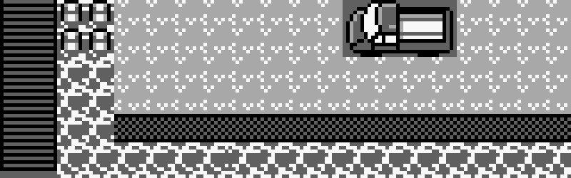

Prima di gettarci a capofitto nella questione presentata dal titolo è necessario spendere due parole per contestualizzare questo articolo mettendoci nei panni di un ragazzino di dodici anni del 1996. Ovviamente la maggior parte dei lettori ha avuto anch'essa dodici anni ma per pretesa di completezza lo faremo lo stesso. Il vantaggio di fare ciò? Solo così ci potremo godere al massimo del migliore glitch del franchise che permette di eseguire del codice arbitrario sul vostro ormai polveroso GameBoy.
Nella prima generazione Pokèmon è presente uno particolarmente raro, Mew, il 151esimo Pokèmon. La sua abilità unica è quella di poter apprendere tutte le mosse presenti nel gioco. Mew è di tipo Psico, senza dubbio il più potente della prima generazione. L'unico modo legittimo di ottenere una copia di Mew era di recarsi ad un evento organizzato in collaborazione con la catena di distribuzione di giocattoli Toys'R'Us. Ovviamente tutti quelli che non avevano potuto partecipare a questi rarissimi eventi localizzati bramavano di poter possedere una copia di Mew a loro volta. Lo desideravano a tal punto che qualche utente ha iniziato a far circolare una leggenda urbana per cui se ci si fosse recati alla banchina del porto della città di Aranciopoli alla quale era attraccata la Motonave Anna e in particolare davanti ad un camioncino che si trovava lì vicino, si sarebbe potuto utilizzare la mossa Forza per spostare il mezzo, unico nel suo genere in quanto non ne erano presenti di uguali nel resto del gioco, scatenando quindi un incontro con Mew che sarebbe saltato fuori da sotto il furgone.
Per dare alla leggenda un alone di credibilità era necessario un elemento fondamentale: la scarsa ripetibilità dell'esperimento. Poichè per come è strutturata la storia principale del gioco di prima generazione non era possibile testare la veridicità della procedura dopo aver raggiunto un certo punto di avanzamento nella storia e data la scarsissima capacità di memoria delle cartucce sulle quali era distribuito il gioco, non era possibile gestire più di un salvataggio. Per questo motivo, per poter riprovare, si sarebbe dovuto resettare il salvataggio, dicendo addio a tutti i progressi faticosamente raggiunti e la nostra rosa di potentissimi mostriciattoli tascabili. Ovviamente chi ci suggeriva dell'esistenza di questa procedura era ben contento di "badare" ai nostri preziosi Pokèmon previo scambio per permetterci di ricominciare senza necessariamente gettare all'aria il tempo trascorso sul primo salvataggio. Chissà quanti litigi sono stati scatenati perchè qualcuno non voleva più ridare al legittimo proprietario i suoi Pokèmon...
Tutta questa attenzione alla vicenda ha generato negli anni successivi l'interesse di utenti più esperti della comunità Pokèmon. Uno di loro in particolare, MrCheeze un utente dei forum che in quegl'anni pullulavano di fan sfegatati alla ricerca di spiegazioni, è riuscito a creare un "virus" per le prime cartucce Pokèmon. Modificando manualmente il salvataggio era possibile replicare le modifiche su una seconda console portatile utilizzando il Game Link cable, ideato per effettuare lo scambio di Pokèmon tra cartucce. Il risultato veniva poi combinato con un altro esploit che permetteva l'esecuzione arbitraria di funzioni e procedure della cartucca in maniera da permettere alla leggenda di diventare realtà. Era quindi possibile spostare il camioncino e scatenare l'incontro con Mew, esattamente come le voci riportavano.